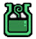
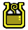
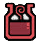
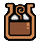

ITENS & CRAFTING
| Nome | Descrição | Comumente encontrado | Valor | Raridade | |
|---|---|---|---|---|---|
|  | Potion | Restaura uma pequena quantidade de saúde. | Combine Herb e Blue Mushroom ou compre na loja ou na loja da guilda | 7z | 1 |
| Mega Potion | Restaura uma quantidade moderada de saúde. | Combine Potion e Honey. | 16z | 2 | |
| Nutrients | Aumenta ligeiramente o nível máximo de saúde. | Combine Godbug e Blue Mushroom. | 25z | 2 | |
| Mega Nutrients | Medicamento que aumenta o nível máximo de Saúde em uma pequena quantidade. | Combine Nutrients e Honey. | 92z | 3 | |
| Antidote | Remove eficazmente todos os vestígios de veneno do seu sistema. | Combine Antidote Herb e Blue Mushroom ou compre na loja da vila. | 6z | 1 | |
|  | Immunizer | Medicamento que aumenta a capacidade de recuperação natural. | Combine Catalyst e Dragon Toadstool. | 92z | 3 |
| Power Juice | Permite que você corra sem se cansar por um período de tempo. | Combine Rare Steak e Catalyst. | 29z | 2 | |
| Mega Juice | Permite que você corra sem fadiga por ainda mais tempo do que Power Juice. | Combine Well-Done Steak e Power Extract. | 205z | 3 | |
|  | Demondrug | Aumenta o poder de ataque, conferindo a força do próprio Asura ao usuário. | Combine Power Seed e Catalyst. | 67z | 4 |
| Mega Demondrug | Aumenta o poder de ataque ainda mais do que Demondrug. | Combine Demondrug e Pale Extract. | 283z | 5 | |
| Power Pill | Uma pílula de fortalecimento que lhe confere o poder de um deus feroz. | Combine Immunizer e Power Seed. | 280z | 1 | |
|  | Armorskin | Aumenta a defesa, tornando sua pele uma armadura de pedra. | Combine Catalyst e Armor Seed. | 58z | 4 |
| Mega Armorskin | Aumenta a defesa ainda mais do que a Armonskin. | Combine Armorskin e Pale Extract. | 269z | 5 | |
| Armor Pill | Uma pílula que temporariamente torna sua pele dura como metal. | Combine Immunizer e Armor Seed. | 260z | 1 | |
| Cool Drink | Uma bebida que confere resistência temporária ao calor extremo. | Combine Bitterbug e Ice Cristal ou compre na loja e na loja da guilda. | 30z | 1 | |
| Hot Drink | Uma bebida que confere resistência temporária ao frio extremo. | Combine Hot Pepper e Bitterbug ou compre na loja e na loja da guilda. | 25z | 1 | |
| Thawing Agent | Um agente químico que derrete a tundra congelada na alma. | Combine Fire Herb e Rumblefish. | 10z | 1 | |
| Psychoserum | Ativa temporariamente uma habilidade psíquica de sentir Wyverns. | Combine Cactus Flower e Thunderbug, pode ser comprado na loja. | 30z | 3 | |
| Herbal Medicine | Cura o veneno com eficácia e restaura uma pequena quantidade de saúde. | Combine Cactus Flower e Bitterbug. | 25z | 2 | |
| Max Potion | Restaura a saúde ao nível máximo, permitindo uma recuperação completa. | Combine Mega Nutrients e Dragon Toadstool. Recompensa comum de missões Kirin. | 210z | 3 | |
| Ancient Potion | Restaura a saúde e a resistência aos níveis máximos, permitindo uma recuperação total. | Combine Immunizer e Kelbi Horn. Recompensa comum de missões Kirin. | 345z | 5 | |
| Energy Drink | Recupera o vigor e cura a fadiga. Aprovado pela Guilda. | Combine Sunset Herb e Honey. | 6z | 2 | |
| Lifepowder | Medicina criada combinando cristais de vida. Forte poder restaurador | Combine Lifecrystals e Wyvern Claw. | 315z | 4 |